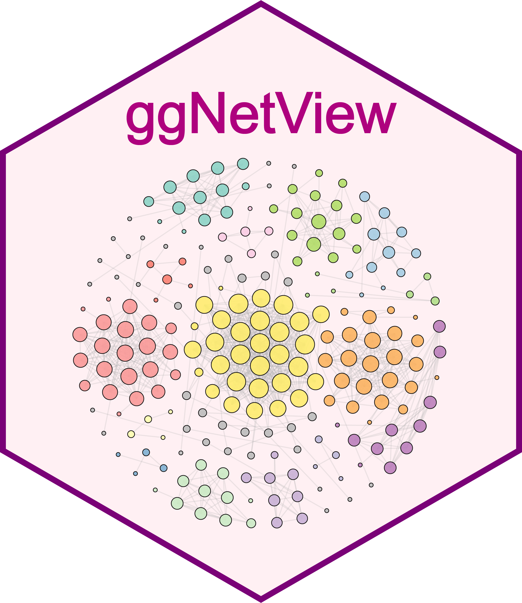

Visualize network with custom layouts in different samples
Source:R/ggNetView_multi.R
ggNetView_multi.RdVisualize network with custom layouts in different samples
Usage
ggNetView_multi(
mat,
group_info,
transfrom.method = c("none", "scale", "center", "log2", "log10", "ln", "rrarefy",
"rrarefy_relative"),
r.threshold = 0.7,
p.threshold = 0.05,
method = c("WGCNA", "SpiecEasi", "SPARCC", "cor"),
cor.method = c("pearson", "kendall", "spearman"),
proc = c("Bonferroni", "Holm", "Hochberg", "SidakSS", "SidakSD", "BH", "BY", "ABH",
"TSBH"),
module.method = c("Fast_greedy", "Walktrap", "Edge_betweenness", "Spinglass"),
SpiecEasi.method = c("mb", "glasso"),
node_annotation = NULL,
top_modules = 15,
layout = NULL,
node_add = 7,
ring_n = NULL,
r = 1,
center = TRUE,
idx = NULL,
shrink = 1,
k_nn = 8,
push_others_delta = 0,
layout.module = c("random", "adjacent", "order"),
shape = 21,
pointalpha = 1,
pointsize = c(1, 10),
pointstroke = 0.3,
group.by = "Modularity",
fill.by = "Modularity",
jitter = FALSE,
jitter_sd = 0.1,
mapping_line = FALSE,
curve = F,
curvature = 0.25,
linealpha = 0.25,
linecolor = "grey70",
label = FALSE,
labelsize = 10,
labelsegmentsize = 1,
labelsegmentalpha = 1,
add_outer = FALSE,
outerwidth = 1.25,
outerlinetype = 2,
outeralpha = 0.5,
nodelabsize = 5,
remove = FALSE,
orientation = "up",
angle = 0,
scale = T,
anchor_dist = 6,
seed = 1115,
nrow = NULL
)Arguments
- mat
Numeric matrix. A numeric matrix with samples in rows and variables in columns.
- group_info
DataFrame The group information contains: Sample and Group
- transfrom.method
Character. Data transformation methods applied before correlation analysis. Options include: "none" (raw data), "scale" (z-score standardization), "center" (mean centering only), "log2" (log2 transfrom), "log10" (log10 transfrom), "ln" (natural transfrom ), "rrarefy" (random rarefaction using
vegan::rrarefy), "rrarefy_relative" (rarefy then convert to relative abundance).- r.threshold
Numeric. Correlation coefficient threshold; edges are kept only if |r| >= r.threshold.
- p.threshold
p.threshold Significance threshold for correlations; edges are kept only if p < p.threshold.
- method
Character. Relationship analysis methods. Options include: "WGCNA", "SpiecEasi", "SPARCC" and "cor".
- cor.method
Character. Correlation analysis method. Options include "pearson", "kendall", and "spearman".
- proc
Character. Correlation p-value adjustment methods. Options include: "Bonferroni", "Holm", "Hochberg", " SidakSS", "SidakSD","BH", "BY", "ABH", and "TSBH".
- module.method
Character. Network community detection (module identification) method. Options include "Fast_greedy", "Walktrap", "Edge_betweenness", and "Spinglass".
- SpiecEasi.method
Character. Method used in
SpiecEasinetwork inference; options include "mb" and "glasso".- node_annotation
Data frame. Optional node annotation table, containing metadata such as taxonomy or functional categories.
- top_modules
Integer. Number of top-ranked modules to retain for downstream visualization or analysis.
- layout
Character string. Custom layouts; one of "gephi", "square", "square2", "petal", "petal2", "heart_centered","diamond", "star", "star_concentric","rectangle, "rightiso_layers" etc.
- node_add
Integer (default = 7). Number of nodes to add in each layer of the layout.
- ring_n
Numeric (default = 7) Numbers of ring in rings layout.
- r
Numeric (default = 1). Radius increment for concentric or layered layouts.
- center
Logical (default = TRUE). Whether to place a node at the center of the layout.
- idx
Optional. Index of nodes to be emphasized or centered in the layout
- shrink
Numeric (default = 1). Shrinkage factor applied to the center points.
- k_nn
Numeric (default = 8). Number of nearest neighbors used to build the local adjacency graph.
- push_others_delta
Numeric (default = 0). Radial offset applied to the "Others" module to slightly
- layout.module
Character (default = "random") - adjacent : modules are positioned close to each other, minimizing inter-module gaps. - order : modules are distributed by order, applicable to `Bipartite, Tripartite, Quadripartite, Multipartite, Pentapartite Layout`
- shape
Integer (default = 21). The point shape likely in ggplot2.
- pointalpha
Integer (default = 1). The point alpha
- pointsize
Vector (default = c(1,10)) The point size rang.
- pointstroke
Integer (default = 0.3).
- group.by
Character (default = "Modularity"). Change group for nodes
- fill.by
Character (default = "Modularity"). Change fill for nodes
- jitter
Logical (default = FALSE). Whether to apply jitter to points.
- jitter_sd
Integer (default = 0.1). The standard deviation of the jitter applied when `jitter = TRUE`.
- mapping_line
Logical (default = FALSE). Whether to mapping line in ggNetView.
- curve
Logical (default = FALSE). Whether to plot curve line in net plot.
- curvature
Integer (default = 0.25) The curve level of curve line when curve is TRUE
- linealpha
Integer (default = 0.25). Change line alpha.
- linecolor
Character (default = "grey70"). Change line color.
- label
Logical (default = FALSE). Whether to display node labels in the center points.
- labelsize
Integer (default = 10). Change Module label size.
- labelsegmentsize
Integer (default = 1). Change label segment size.
- labelsegmentalpha
Integer (default = 1). Change label segment alpha.
- add_outer
Logical (default = FALSE). Whether to add an outer circle/border around the layout.
- outerwidth
Integer (default = 1.25). Change outer linewidth.
- outerlinetype
Integer (default = 2). Change outer linetype.
- outeralpha
Integer (default = 0.5). Change outer alpha.
- nodelabsize
Integer (default = 5). Change node label size.
- remove
Logical (default = FALSE). Delect nodes that are not modules.
- orientation
Character string. Custom orientation; one of "up","down","left","right".
- angle
Integer (default = 0). Change orientation angle.
- scale
Logical (default = T). modules applicable to `Bipartite, Tripartite, Quadripartite, Multipartite, Pentapartite Layout` to scale the radius
- anchor_dist
Integer (default = 6) the distance of each modules, applicable to `Bipartite, Tripartite, Quadripartite, Multipartite, Pentapartite Layout`
- seed
Integer (default = 1115). Random seed for reproducibility.
- nrwo
Integer (default = NULL). Then nrow of combinme plot